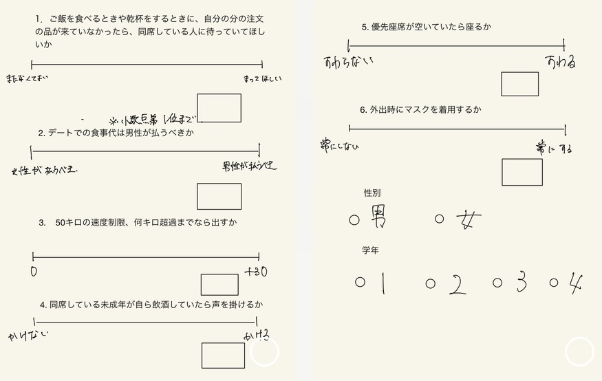

人間の子どもは自らの身体的経験、感覚運動情報の統合を通じて機能を獲得し、言語を獲得し、コミュニケーションを可能にする。
個体における認知システムにとどまらず、社会における認知システムにとどまらず、社会における言語やジェスチャーのような記号システムも存在している。
認知システムにおける内部表現のボトムアップ的形成と社会における記号システムの形成(記号創発システム)を、計算論的・構成論的にモデル化する。
また、その現象を実世界の環境で再現する。
すなわち記号創発システムへの構成論的アプローチだと言える。
社会は「記号」にあふれており、記号創発システムは私たちは無意識のうちに記号創発システムの中で暮らしている。
その中で生活する一員として、記号創発システムの一部をかいつまんで以下の企画に取り組むこととする。
出典：「記号創発問題 ─記号創発ロボティクスによる記号接地問題の本質的解決に向けて─. create with.AI "
https://archive.createwith.ai/paper/20200205/1733 " (閲覧日2023-07-05)」
第8回講義で扱われていたように、乾杯するまで飲めない「配膳後他者待ち行動」といった「暗黙の了解」が存在する。 このような文化心理学的事象を情報学に基づいた視点から分析することにより、記号創発ロボティクスの知見を深める。
立命館大学BKCキャンパスに所属する大学生を対象に、各学年10人程度、合計39人に対してアンケートをとる。
学年、性別を目的変数、アンケートの回答の数値を説明変数とし、クラスタリング(K-Means法)を行う。
その後、学年や性別ごとに相関があるかどうかを分析する。質問内容は日常生活において経験したことがある事象について以下のような複数の質問を用意し、
口頭で尋ね、数直線を用意し、あてはまる数値を記入してもらう。
アンケートは以下のような画像を制作し、実施した。

mask： 外出時にマスクをつけるか
meal： 食事は男性が多く払うべきか
speed： 自動車運転時、法定速度を超えて出す速度をだす場合、どれくらいだすか
child-drink： 同席している未成年が飲酒していたらとめるか
wait： 外食の際、自分の食事が提供されるまで同席している人に食べ始めるのを待って欲しいか
(※ 今回アンケートでは、優先座席が空いていたら座るかどうか、という質問もしていたが、これに関してはあまり特徴がみられなかったため割愛している。)
本成果物における記号創発システム科学とのかかわりは、まず主に文化心理学で題材にされる「暗黙の了解」という記号論を、自身が学んでいる情報工学の視点から分析や考察をすることによって、分野の越境を実現させることにある。
アンケートの回答と、属性から相関を見つけ出し社会的な文化を内包したシステム論を論じることが、本講義のエッセンスが入っている部分である。
また、企画書の内容を口頭でアンケートを取るという行為も記号論的に解釈できるという点では、そのエッセンスが入っていると考えられる。このアンケートではあらかじめ生活する中で一度は経験したことがあるだろう事象を題材にしている。
その質問の内容は、広く認知された名称が決まっていることではないが、各々の経験として知覚され共通認識でどのような状況であるかということがアンケート回答者の脳内で想像できるだろう。
このような自身の内部パラメータを更新し、内的表象を組織化させ、「認知的な閉じ」を無意識的に体験してもらう、またはアンケート実施者の視点から観察することができる。


一番大きく相関がみられた結果は、自動車運転時の速度と未成年飲酒に関する質問である。図を見ると、負の相関がみられる。つまり、自動車運転時に、法定速度を超えてスピードを出す人は同席している未成年が飲酒していても声をかけず、見過ごす人が多い。一方で、運転時に速度をあまり出さない人は、同席している未成年が飲酒していたら止めることが多いことが分かった。
図２から、グラフの右上には分布がないことがわかる。このことから、食事を男性が多く払うべきだと思う人は、未成年飲酒を進めない傾向にあることがわかる。
図3から、グラフの右上には分布していないことがわかる。このことから、自動車の運転時に法定速度を大幅に超えて速度を出す人で、食事の際に、他人に自分の食事を待ってほしいと思う人はあまりいないことがわかる。
また、実行時のコードは以下のようになっている。
import pandas as pd
import numpy as np
import matplotlib.pyplot as plt
from sklearn.cluster import KMeans
%matplotlib inline
df1 = pd.read_csv('Book1.csv')
print(df1.head())
km = KMeans(n_clusters=4)
X = df1[['未成年飲酒', '優先座席']]
km.fit(X)
pred=km.labels_
x0=X[pred==0]
x1=X[pred==1]
x2=X[pred==2]
x3=X[pred==3]
x4=X[pred==4]
plt.scatter(x1['未成年飲酒'], x1['優先座席'], c='blue', marker='o', label='cluster1')
plt.scatter(x0['未成年飲酒'], x0['優先座席'], c='red', marker='o', label='cluster0')
plt.scatter(x2['未成年飲酒'], x2['優先座席'], c='yellow', marker='o', label='cluster2')
plt.scatter(x3['未成年飲酒'], x3['優先座席'], c='green', marker='o', label='cluster3')
plt.xlabel('child_drink')
plt.ylabel('seat')
plt.legend(loc=5)
plt.show()
なお、コード中の「未成年飲酒」と「優先座席」という引数には こちら で述べた引数が入り、それによって出力される表が異なる。
これらの結果から、特定の暗黙の了解を行う人は、別の特定の暗黙の了解を行う、もしくは行わないといった関係性があることが分かった。 暗黙の了解はルールやマナーといわれることもあり、多くの人の中では常識や習慣と化している。人付き合いをする際、このような常識や習慣を相手に合わせるということは非常に重要な行為であると考える。 例えば、まったくマナーや常識がない人と行動を共にすれば周囲からの視線が気になったりして不快に感じることになる。 一方で、マナーや常識を持ちすぎている人やそれらを押し付けてくる人と行動を共にしていてもまた、快適ではないと感じるであろう。 したがって、ある人物のある状況での特定の行動パターンから、その人の異なる状況での行動パターンや暗黙の了解に裏付けされた心理を予測することができる。こうすることで、人付き合いをより円滑に、より快適に進めることができる。
データを採取した際に、性別や学年などの目的変数となるものもアンケートしたが、今回のK-Means法を用いたデータ分析ではうまく活用できなかった。
もっと適している分析方法を活用するか、データ採取の段階で不要なアンケート項目を設けないことが大切であると感じた。
また、データの母数が少なかったことも十分な分析結果が得られなかった原因である。メンバーが二人しかおらず、期間も短かったため、仕方ないことではあるが、
母数の小ささからデータの信頼度が十分であるとは言えない結果となった。